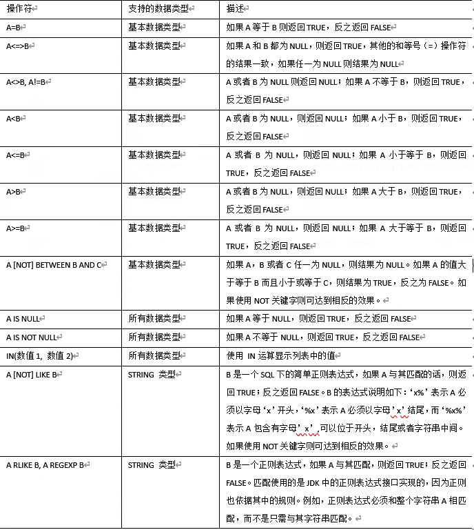
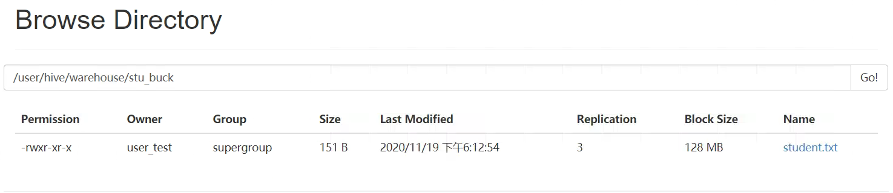
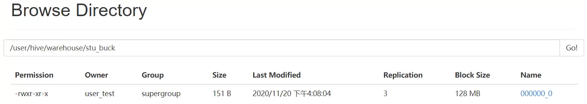
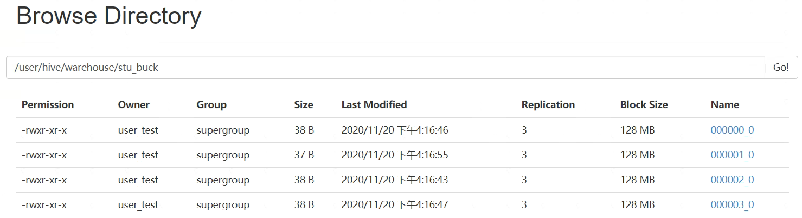

Hive
查询
查询语句语法：
[WITH CommonTableExpression (, CommonTableExpression)*] (Note: Only available
starting with Hive 0.13.0)
SELECT [ALL | DISTINCT] select_expr, select_expr, ...
FROM table_reference
[WHERE where_condition]
[GROUP BY col_list]
[ORDER BY col_list]
[CLUSTER BY col_list
| [DISTRIBUTE BY col_list] [SORT BY col_list]
]
[LIMIT number]基本查询(Select…From)
全表和特定列查询
- 全表查询
hive (default)> select * from emp;- 选择特定列查询
hive (default)> select empno, ename from emp;注：
(1) SQL 语言大小写不敏感。
(2) SQL 可以写在一行或者多行
(3) 关键字不能被缩写也不能分行
(4) 各子句一般要分行写。
(5) 使用缩进提高语句的可读性。
列别名
重命名一个列
便于计算
紧跟列名，也可以在列名和别名之间加入关键字 AS
案例实操
查询名称和部门
hive (default)> select ename AS name, deptno dn from emp;算术运算符
| 运算符 | 功能 |
| —— | —————– | ————— |
| A+B | A 和 B 相加 |
| A-B | A 减去 B |
| A*B | A 和 B 相乘 |
| A/B | A 除以 B |
| A%B | A 对 B 取余 |
| A&B | A 和 B 按位取与 |
| A | B | A 和 B 按位取或 |
| A^B | A 和 B 按位取异或 |
| ~A | A 按位取反 |
案例实操
查询出所有员工的薪水后加 1 显示。
hive (default)> select sal + 1 from emp;常用函数
- 求总行数(count)
hive (default)> select count(*) cnt from emp;- 求工资的最大值(max)
hive (default)> select max(sal) max_sal from emp;- 求工资的最小值(min)
hive (default)> select min(sal) min_sal from emp;- 求工资的总和(sum)
hive (default)> select sum(sal) sum_sal from emp;- 求工资的平均值(avg)
hive (default)> select avg(sal) avg_sal from emp;Limit 语句
典型的查询会返回多行数据。LIMIT 子句用于限制返回的行数。
hive (default)> select * from emp limit 5;Where 语句
使用 WHERE 子句，将不满足条件的行过滤掉
WHERE 子句紧随 FROM 子句
案例实操
查询出薪水大于 1000 的所有员工
hive (default)> select _ from emp where sal >1000;比较运算符(Between/In/ Is Null)
- 下面图片描述了谓词操作符，这些操作符同样可以用于 JOIN…ON 和 HAVING 语句中。

- 案例实操
(1) 查询出薪水等于 5000 的所有员工
hive (default)> select * from emp where sal=5000;(2) 查询工资在 500 到 1000 的员工信息
hive (default)> select * from emp where sal between 500 and 1000;(3) 查询 comm 为空的所有员工信息
hive (default)> select * from emp where comm is null;(4) 查询工资是 1500 或 5000 的员工信息
hive (default)> select * from emp where sal IN (1500, 5000);Like 和 RLike
(1) 使用 LIKE 运算选择类似的值
(2) 选择条件可以包含字符或数字:
% 代表零个或多个字符(任意个字符)。
- 代表一个字符。
(3) RLIKE 子句是 Hive 中这个功能的一个扩展，其可以通过 Java 的正则表达式这个更强大的语言来指定匹配条件。
(4) 案例实操
(1)查找以 2 开头薪水的员工信息
hive (default)> select * from emp where sal LIKE '2%';(2)查找第二个数值为 2 的薪水的员工信息
hive (default)> select * from emp where sal LIKE '_2%';(3)查找薪水中含有 2 的员工信息
hive (default)> select * from emp where sal RLIKE '[2]';逻辑运算符(And/Or/Not)
| 操作符 | 含义 |
|---|---|
| AND | 逻辑并 |
| OR | 逻辑或 |
| NOT | 逻辑否 |
案例实操
(1) 查询薪水大于 1000，部门是 30
hive (default)> select * from emp where sal>1000 and deptno=30;(2) 查询薪水大于 1000，或者部门是 30
hive (default)> select * from emp where sal>1000 or deptno=30;(3) 查询除了 20 部门和 30 部门以外的员工信息
hive (default)> select * from emp where deptno not IN(30, 20);分组
Group By 语句
GROUP BY 语句通常会和聚合函数一起使用，按照一个或者多个列队结果进行分组，然后对每个组执行聚合操作。
案例实操：
(1) 计算 emp 表每个部门的平均工资
hive (default)> select t.deptno, avg(t.sal) avg_sal from emp t group by t.deptno;(2) 计算 emp 每个部门中每个岗位的最高薪水
hive (default)> select t.deptno, t.job, max(t.sal) max_sal from emp t group by t.deptno, t.job;Having 语句
- having 与 where 不同点
(1) where 针对表中的列发挥作用，查询数据；having 针对查询结果中的列发挥作用，筛选数据。
(2) where 后面不能写分组函数；而 having 后面可以使用分组函数。
(3)having 只用于 group by 分组统计语句。
- 案例实操
(1)求平均薪水大于 2000 的部门的平均工资
hive (default)> select deptno, avg(sal) avg_sal from emp group by deptno having avg_sal > 2000;Join 语句
等值 Join
Hive 支持通常的 SQL JOIN 语句，但是只支持等值连接，不支持非等值连接。
案例实操
(1) 根据员工表和部门表中的部门编号相等，查询员工编号、员工名称和部门名称；
hive (default)> select e.empno, e.ename, d.deptno, d.dname from emp e join dept d on e.deptno = d.deptno;表的别名
- 好处
(1)使用别名可以简化查询。
(2)使用表名前缀可以提高执行效率。
案例实操
合并员工表和部门表
hive (default)> select e.empno, e.ename, d.deptno from emp e join dept d on e.deptno = d.deptno;内连接
只有进行连接的两个表中都存在与连接条件相匹配的数据才会被保留下来。
hive (default)> select e.empno, e.ename, d.deptno from emp e join dept d on e.deptno = d.deptno;左外连接
JOIN 操作符左边表中符合 WHERE 子句的所有记录将会被返回。
hive (default)> select e.empno, e.ename, d.deptno from emp e left join dept d on e.deptno = d.deptno;右外连接
JOIN 操作符右边表中符合 WHERE 子句的所有记录将会被返回。
hive (default)> select e.empno, e.ename, d.deptno from emp e right join dept d on e.deptno = d.deptno;满外连接
将会返回所有表中符合 WHERE 语句条件的所有记录。如果任一表的指定字段没有符合条件的值的话，那么就使用 NULL 值替代。
hive (default)> select e.empno, e.ename, d.deptno from emp e full join dept d on e.deptno = d.deptno;多表连接
注：连接 n 个表，至少需要 n-1 个连接条件。例如：连接三个表，至少需要两个连接条件。
- 数据准备
[location.txt]
1700 Beijing
1800 London
1900 Tokyo- 创建位置表
create table if not exists default.location(
loc int, loc_name string ) row format delimited fields terminated by '\t';- 导入数据
hive (default)> load data local inpath '/opt/module/datas/location.txt' into table default.location;- 多表连接查询
hive (default)> SELECT e.ename, d.deptno, l.loc_name FROM emp e JOIN dept d ON d.deptno = e.deptno JOIN location l ON d.loc = l.loc;大多数情况下，Hive 会对每对 JOIN 连接对象启动一个 MapReduce 任务。本例中会首先启动一个 MapReduce job 对表 e 和表 d 进行连接操作，然后会再启动一个 MapReduce job 将第一个 MapReduce job 的输出和表 l 进行连接操作。
注：之所以不先进行表 d 和表 l 连接操作是因为 Hive 总是按照从左到右的顺序执行的。
笛卡尔积
- 笛卡尔集会在下面条件下产生
(1)省略连接条件
(2)连接条件无效
(3)所有表中的所有行互相连接
- 案例实操
hive (default)> select empno, dname from emp, dept;
连接谓词中不支持 or
注：下面是错误的
hive (default)> select e.empno, e.ename, d.deptno from emp e join dept d on e.deptno
= d.deptno or e.ename=d.ename;排序
全局排序(Order By)
Order By：全局排序，一个 Reducer
- 使用 ORDER BY 子句排序
ASC(ascend): 升序(默认)
DESC(descend): 降序
ORDER BY 子句在 SELECT 语句的结尾
案例实操
(1)查询员工信息按工资升序排列
hive (default)> select * from emp order by sal;(2)查询员工信息按工资降序排列
hive (default)> select * from emp order by sal desc;按照别名排序
按照员工薪水的 2 倍排序
hive (default)> select ename, sal*2 double_sal from emp order by double_sal;多个列排序
按照部门和工资升序排序
hive (default)> select ename, deptno, sal from emp order by deptno, sal ;每个 MapReduce 内部排序(Sort By)
Sort By：每个 Reducer 内部进行排序，对全局结果集来说不是排序。
- 设置 reduce 个数
hive (default)> set mapreduce.job.reduces=3;- 查看设置 reduce 个数
hive (default)> set mapreduce.job.reduces;- 根据部门编号降序查看员工信息
hive (default)> select * from emp sort by empno desc;- 将查询结果导入到文件中(按照部门编号降序排序)
hive (default)> insert overwrite local directory '/opt/module/datas/sortby-result' select * from emp sort by deptno desc;分区排序(Distribute By)
Distribute By：类似 MR 中 partition，进行分区，结合 sort by 使用。
注：Hive 要求 DISTRIBUTE BY 语句要写在 SORT BY 语句之前。
对于 distribute by 进行测试，一定要分配多 reduce 进行处理，否则无法看到 distribute by 的效果。
案例实操：
(1) 先按照部门编号分区，再按照员工编号降序排序。
hive (default)> set mapreduce.job.reduces=3;
hive (default)> insert overwrite local directory '/opt/module/datas/distribute-result' select * from emp distribute by deptno sort by empno desc;Cluster By
当 distribute by 和 sorts by 字段相同时，可以使用 cluster by 方式。
cluster by 除了具有 distribute by 的功能外还兼具 sort by 的功能。但是排序只能是升序排序，不能指定排序规则为 ASC 或者 DESC。
1)以下两种写法等价
hive (default)> select * from emp cluster by deptno;
hive (default)> select * from emp distribute by deptno sort by deptno;注：按照部门编号分区，不一定就是固定死的数值，可以是 20 号和 30 号部门分到一个分区里面去。
分桶及抽样查询
分桶表数据存储
分区针对的是数据的存储路径；分桶针对的是数据文件。
分区提供一个隔离数据和优化查询的便利方式。不过，并非所有的数据集都可形成合理的分区，特别是之前所提到过的要确定合适的划分大小这个疑虑。
分桶是将数据集分解成更容易管理的若干部分的另一个技术。
- 先创建分桶表，通过直接导入数据文件的方式
(1) 数据准备
[student.txt]
1001 ss1
1002 ss2
1003 ss3
1004 ss4
1005 ss5
1006 ss6
1007 ss7
1008 ss8
1009 ss9
1010 ss10
1011 ss11
1012 ss12
1013 ss13
1014 ss14
1015 ss15
1016 ss16(2) 创建分桶表
create table stu_buck(id int, name string) clustered by(id) into 4 buckets row format delimited fields terminated by '\t';(3) 查看表结构
hive (default)> desc formatted stu_buck;
——>
...
Num Buckets: 4
...(4) 导入数据到分桶表中
hive (default)> load data local inpath '/opt/module/datas/student.txt' into table stu_buck;(5)查看创建的分桶表中是否分成 4 个桶

发现并没有分成 4 个桶。
- 创建分桶表时，数据通过子查询的方式导入
(1) 先建一个普通的 stu 表
create table stu(id int, name string) row format delimited fields terminated by '\t';(2) 向普通的 stu 表中导入数据
load data local inpath '/opt/module/datas/student.txt' into table stu;(3) 清空 stu_buck 表中数据
truncate table stu_buck;(4) 导入数据到分桶表，通过子查询的方式
insert into table stu_buck select id, name from stu;
仍然是一个分区
(5) 需要设置一个属性
hive (default)> set hive.enforce.bucketing=true;
hive (default)> set mapreduce.job.reduces=-1;
hive (default)> insert into table stu_buck
select id, name from stu;
(6) 查询分桶的数据
hive (default)> select * from stu_buck;
——>
OK
stu_buck.id stu_buck.name
1004 ss4
1008 ss8
1012 ss12
1016 ss16
1001 ss1
1005 ss5
1009 ss9
1013 ss13
1002 ss2
1006 ss6
1010 ss10
1014 ss14
1003 ss3
1007 ss7
1011 ss11
1015 ss15分桶抽样查询
对于非常大的数据集，有时用户需要使用的是一个具有代表性的查询结果而不是全部结果。Hive 可以通过对表进行抽样来满足这个需求。
查询表 stu_buck 中的数据。
hive (default)> select * from stu_buck tablesample(bucket 1 out of 4 on id);注：tablesample 是抽样语句，语法：TABLESAMPLE(BUCKET x OUT OF y)
y 必须是 table 总 bucket 数的倍数或者因子。hive 根据 y 的大小，决定抽样的比例。例如，table 总共分了 4 份，当 y=2 时，抽取 2(4/2) 个 bucket 的数据，当 y=8 时，抽取(4/8=)1/2 个 bucket 的数据。
x 表示从哪个 bucket 开始抽取，如果需要取多个分区，以后的分区号为当前分区号加上 y。例如，table 总 bucket 数为 4，tablesample(bucket 1 out of 2)，表示总共抽取(4/2=)2 个 bucket 的数据，抽取第 1(x)个和第 3(x+y)个 bucket 的数据。
注：x 的值必须小于等于 y 的值，否则
FAILED: SemanticException [Error 10061]: Numerator should not be bigger than denominator in sample clause for table stu_buck其他常用查询函数
空字段赋值
- 函数说明
NVL：给值为 NULL 的数据赋值，它的格式是 NVL(string1,replace_with)。它的功能是如果 string1 为 NULL，则 NVL 函数返回 replace_with 的值，否则返回 string1 的值，如果两个参数都为 NULL ，则返回 NULL。
数据准备：采用员工表
查询：如果员工的 comm 为 NULL，则用-1 代替
hive (default)> select nvl(comm,-1) from emp;
——>
OK
_c0
20.0
300.0
500.0
-1.0
1400.0
-1.0
-1.0
-1.0
-1.0
0.0
-1.0
-1.0
-1.0
-1.0- 查询：如果员工的 comm 为 NULL，则用领导 id 代替
hive (default)> select nvl(comm,mgr) from emp;
——>
OK
_c0
20.0
300.0
500.0
7839.0
1400.0
7839.0
7839.0
7566.0
NULL
0.0
7788.0
7698.0
7566.0CASE WHEN
- 数据准备
| name | dept_id | sex |
|---|---|---|
| 悟空 | A | 男 |
| 大海 | A | 男 |
| 宋宋 | B | 男 |
| 凤姐 | A | 女 |
| 婷姐 | B | 女 |
| 婷婷 | B | 女 |
- 需求
求出不同部门男女各多少人：
A 2 1
B 1 2- 创建本地 emp_sex.txt，导入数据
[user_test@hadoop102 datas]\$ vim emp_sex.txt悟空 A 男
大海 A 男
宋宋 B 男
凤姐 A 女
婷姐 B 女
婷婷 B 女- 创建 hive 表并导入数据
create table emp_sex(name string,dept_id string,sex string) row format delimited fields terminated by "\t";
load data local inpath '/opt/module/datas/emp_sex.txt' into table emp_sex;- 按需求查询数据
select
dept_id,
sum(case sex when '男' then 1 else 0 end) male_count,
sum(case sex when '女' then 1 else 0 end) female_count
from
emp_sex
group by
dept_id;结果
OK
dept_id male_count female_count
A 2 1
B 1 2行转列
- 相关函数说明
CONCAT(string A/col, string B/col…)：返回输入字符串连接后的结果，支持任意个输入字符串;
CONCAT_WS(separator, str1, str2,…)：它是一个特殊形式的 CONCAT()。第一个参数剩余参数间的分隔符。分隔符可以是与剩余参数一样的字符串。如果分隔符是 NULL，返回值也将为 NULL。这个函数会跳过分隔符参数后的任何 NULL 和空字符串。分隔符将被加到被连接的字符串之间;
COLLECT_SET(col)：函数只接受基本数据类型，它的主要作用是将某字段的值进行去重汇总，产生 array 类型字段。
- 数据准备
| name | constellation | blood_type |
|---|---|---|
| 孙悟空 | 白羊座 | A |
| 大海 | 射手座 | A |
| 大江 | 白羊座 | B |
| 猪八戒 | 白羊座 | A |
| 凤姐 | 射手座 | A |
- 需求
把星座和血型一样的人归类到一起。结果如下：
射手座,A 大海|凤姐
白羊座,A 孙悟空|猪八戒
白羊座,B 大江- 创建本地 constellation.txt，导入数据
[user_test@hadoop102 datas]$ vim constellation.txt孙悟空 白羊座 A
大海 射手座 A
大江 白羊座 B
猪八戒 白羊座 A
凤姐 射手座 A- 创建 hive 表并导入数据
hive (default)> create table person_info(name string, constellation string, blood_type string) row format delimited fields terminated by '\t';
hive (default)> load data local inpath “/opt/module/datas/constellation.txt” into table person_info;- 按需求查询数据
hive (default)> select
> a.info,
> CONCAT_WS("|", collect_set(a.name))
> from (
> select name, concat_ws(",", constellation, blood_type) info from person_info
> ) a
> group by a.info;列转行
- 函数说明
EXPLODE(col)：将 hive 一列中复杂的 array 或者 map 结构拆分成多行。
LATERAL VIEW(侧写)
用法：LATERAL VIEW udtf(expression) tableAlias AS columnAlias
解释：用于和 split, explode 等 UDTF 一起使用，它能够将一列数据拆成多行数据，在此基础上可以对拆分后的数据进行聚合。
- 数据准备
| movie | category |
|---|---|
| 《疑犯追踪》 | 悬疑,动作,科幻,剧情 |
| 《Lie to me》 | 悬疑,警匪,动作,心理,剧情 |
| 《战狼 2》 | 战争,动作,灾难 |
- 需求
将电影分类中的数组数据展开。结果如下：
《疑犯追踪》 悬疑
《疑犯追踪》 动作
《疑犯追踪》 科幻
《疑犯追踪》 剧情
《Lie to me》 悬疑
《Lie to me》 警匪
《Lie to me》 动作
《Lie to me》 心理
《Lie to me》 剧情
《战狼 2》 战争
《战狼 2》 动作
《战狼 2》 灾难- 创建本地 movie.txt，导入数据
[user_test@hadoop102 datas]$ vim movie.txt《疑犯追踪》 悬疑,动作,科幻,剧情
《Lie to me》 悬疑,警匪,动作,心理,剧情
《战狼 2》 战争,动作,灾难- 创建 hive 表并导入数据
hive (default)> create table movie_info(
> movie string,
> category array<string>)
> row format delimited fields terminated by "\t"
> collection items terminated by ",";
load data local inpath "/opt/module/datas/movie.txt" into table movie_info;- 按需求查询数据
hive (default)> select
> movie,
> category_name
> from
> movie_info lateral view explode(category) table_tmp as category_name;窗口函数
- 相关函数说明
OVER()：指定分析函数工作的数据窗口大小，这个数据窗口大小可能会随着行的变而变化
CURRENT ROW：当前行
n PRECEDING：往前 n 行数据
n FOLLOWING：往后 n 行数据
UNBOUNDED：起点，UNBOUNDED PRECEDING 表示从前面的起点， UNBOUNDED FOLLOWING 表示到后面的终点
LAG(col,n)：往前第 n 行数据
LEAD(col,n)：往后第 n 行数据
NTILE(n)：把有序分区中的行分发到指定数据的组中，各个组有编号，编号从 1 开始，对于每一行，NTILE 返回此行所属的组的编号。注意：n 必须为 int 类型。
- 数据准备：
name,orderdate,cost
jack,2017-01-01,10
tony,2017-01-02,15
jack,2017-02-03,23
tony,2017-01-04,29
jack,2017-01-05,46
jack,2017-04-06,42
tony,2017-01-07,50
jack,2017-01-08,55
mart,2017-04-08,62
mart,2017-04-09,68
neil,2017-05-10,12
mart,2017-04-11,75
neil,2017-06-12,80
mart,2017-04-13,94- 需求
(1)查询在 2017 年 4 月份购买过的顾客及总人数
(2)查询顾客的购买明细及月购买总额
(3)上述的场景,要将 cost 按照日期进行累加
(4)查询顾客上次的购买时间
(5)查询前 20%时间的订单信息
- 创建本地 business.txt，导入数据
[user_test@hadoop102 datas]$ vim business.txt- 创建 hive 表并导入数据
hive (default)> create table business(
> name string,
> orderdate string,
> cost int
> ) ROW FORMAT DELIMITED FIELDS TERMINATED BY ',';
hive (default)> load data local inpath "/opt/module/datas/business.txt" into table business;- 按需求查询数据
(1) 查询在 2017 年 4 月份购买过的顾客及总人数
hive (default)> select name,count(*) over ()
> from business
> where substring(orderdate,1,7) = '2017-04'
> group by name;select name, orderdate, cost, sum(cost) over() from business;
(2) 查询顾客的购买明细及月购买总额
hive (default)> select name,orderdate,cost,sum(cost) over(partition by month(orderdate)) from
> business;(3) 上述的场景,要将 cost 按照日期进行累加
hive (default)> select *,sum(cost) over(sort by orderdate rows between UNBOUNDED PRECEDING and CURRENT ROW) from business;补充
select *,
sum(cost) over() as sample1,--所有行相加
sum(cost) over(partition by name) as sample2,--按 name 分组，组内数据相加
sum(cost) over(partition by name order by orderdate) as sample3,--按 name 分组，组内数据累加
sum(cost) over(partition by name order by orderdate rows between UNBOUNDED PRECEDING and current row ) as sample4 ,--和 sample3 一样,由起点到当前行的聚合
sum(cost) over(partition by name order by orderdate rows between 1 PRECEDING and current row) as sample5, --当前行和前面一行做聚合
sum(cost) over(partition by name order by orderdate rows between 1 PRECEDING AND 1 FOLLOWING ) as sample6,--当前行和前边一行及后面一行
sum(cost) over(partition by name order by orderdate rows between current row and UNBOUNDED FOLLOWING ) as sample7 --当前行及后面所有行
from business;(4) 查看顾客上次的购买时间
hive (default)> select *, lag(orderdate,1) over(partition by name order by orderdate) from business;(5) 查询前 20% 时间的订单信息
hive (default)> select * from (
> select *, ntile(5) over(order by orderdate) as gid from business)a
> where a.gid = 1;Rank
- 函数说明
RANK() 排序相同时会重复，总数不会变
DENSE_RANK() 排序相同时会重复，总数会减少
ROW_NUMBER() 会根据顺序计算
- 数据准备
| name | subject | score |
|---|---|---|
| 孙悟空 | 语文 | 87 |
| 孙悟空 | 数学 | 95 |
| 孙悟空 | 英语 | 68 |
| 大海 | 语文 | 94 |
| 大海 | 数学 | 56 |
| 大海 | 英语 | 84 |
| 小江 | 语文 | 64 |
| 小江 | 数学 | 86 |
| 小江 | 英语 | 84 |
| 婷婷 | 语文 | 65 |
| 婷婷 | 数学 | 85 |
| 婷婷 | 英语 | 78 |
- 需求
计算每门学科成绩排名。
select *, rank(score) from scores group by subject;
- 创建本地 score.txt，导入数据
[user_test@hadoop102 datas]$ vim score.txt- 创建 hive 表并导入数据
hive (default)> create table scores(
> name string,
> subject string,
> score int)
> row format delimited fields terminated by "\t";
hive (default)> load data local inpath '/opt/module/datas/score.txt' into table scores;- 按需求查询数据
select name,
subject,
score,
rank() over(partition by subject order by score desc) rp,
dense_rank() over(partition by subject order by score desc) drp,
row_number() over(partition by subject order by score desc) rmp
from scores;
——>
name subject score rp drp rmp
孙悟空 数学 95 1 1 1
宋宋 数学 86 2 2 2
婷婷 数学 85 3 3 3
大海 数学 56 4 4 4
宋宋 英语 84 1 1 1
大海 英语 84 1 1 2
婷婷 英语 78 3 2 3
孙悟空 英语 68 4 3 4
大海 语文 94 1 1 1
孙悟空 语文 87 2 2 2
婷婷 语文 65 3 3 3
宋宋 语文 64 4 4 4